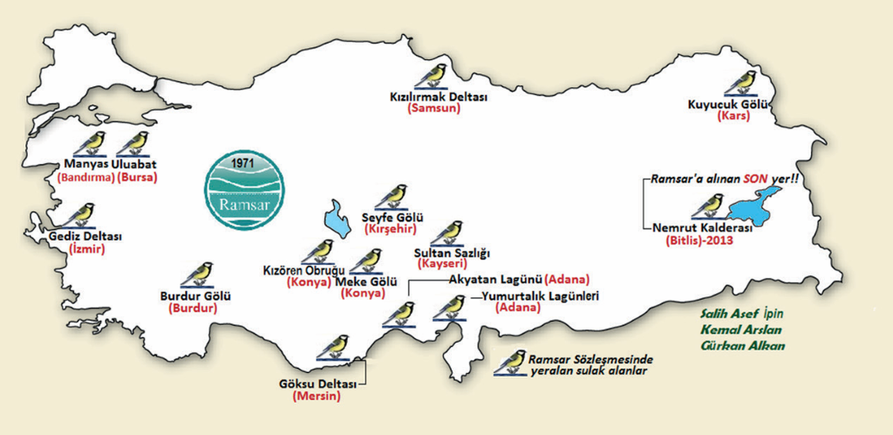
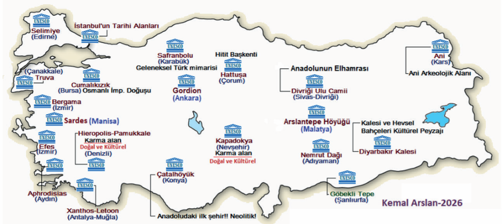

TÜİK: Koruma Alanları
Ramsar Sözleşmesi Kapsamındaki 14 Sulak Alanımız ve 22 UNESCO Dünya Miras Varlığımız.
Ramsar Sözleşmesi Kapsamındaki Sulak Alanlarımız
Uluslararası Öneme Sahip Özel Koruma Altındaki 14 Eşsiz Sulak Alanımız
Türkiye Ramsar Sulak Alanları Haritası

Ramsar, İran'da bir şehirdir. Sözleşme orada imzalandığı için bu adla anılır.
Sulak alanların dünya çapında korunması ve akılcı kullanılması için 1971 yılında imzalanan Uluslararası Sulak Alanların Korunması Sözleşmesi kapsamında özel korumaya alınmış uluslararası öneme sahip bir çevre koruma alanıdır. Türkiye 1994 yılında bu sözleşmeyi imzalayarak taraf olmuştur.
Nemrut Kalderası (Bitlis)
Tarih: 31.01.2013
Tescilli 14 Ramsar Alanımız
TÜRKİYE UNESCO DÜNYA MİRASI LİSTESİ
Uluslararası Tescilli 22 Kültürel ve Doğal Miras Alanımız
Türkiye UNESCO Dünya Miras Alanları Haritası

UNESCO İstatistikleri
Sardes Antik Kenti ve Bin Tepe Lidya Tümülüsleri
Manisa - 2025